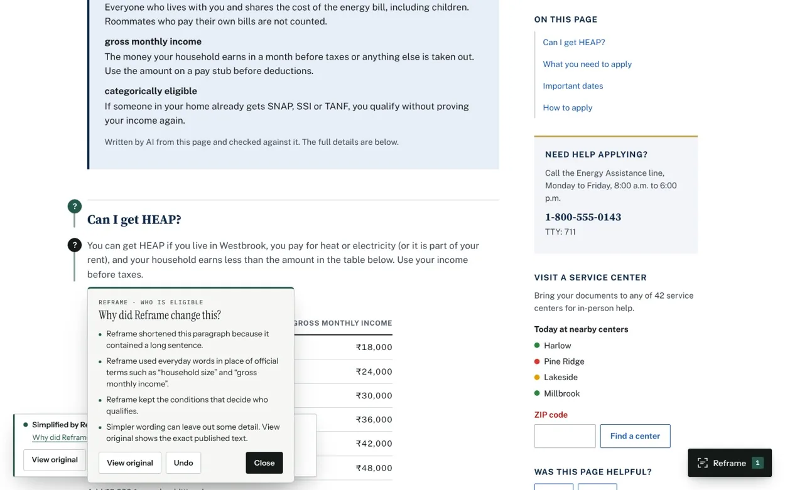
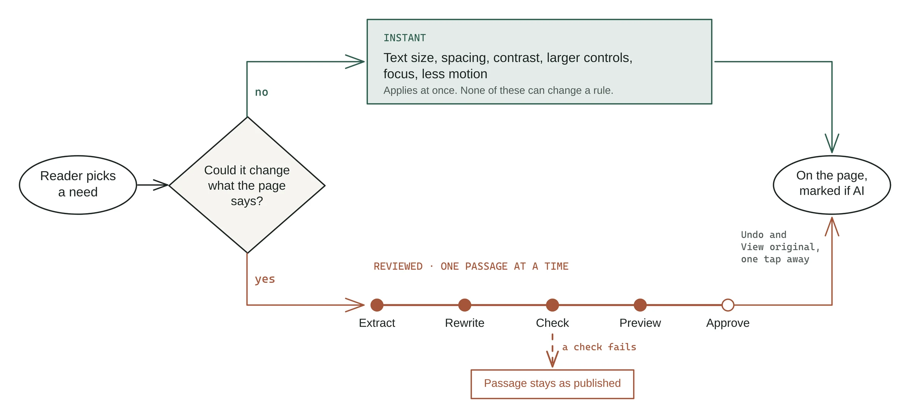
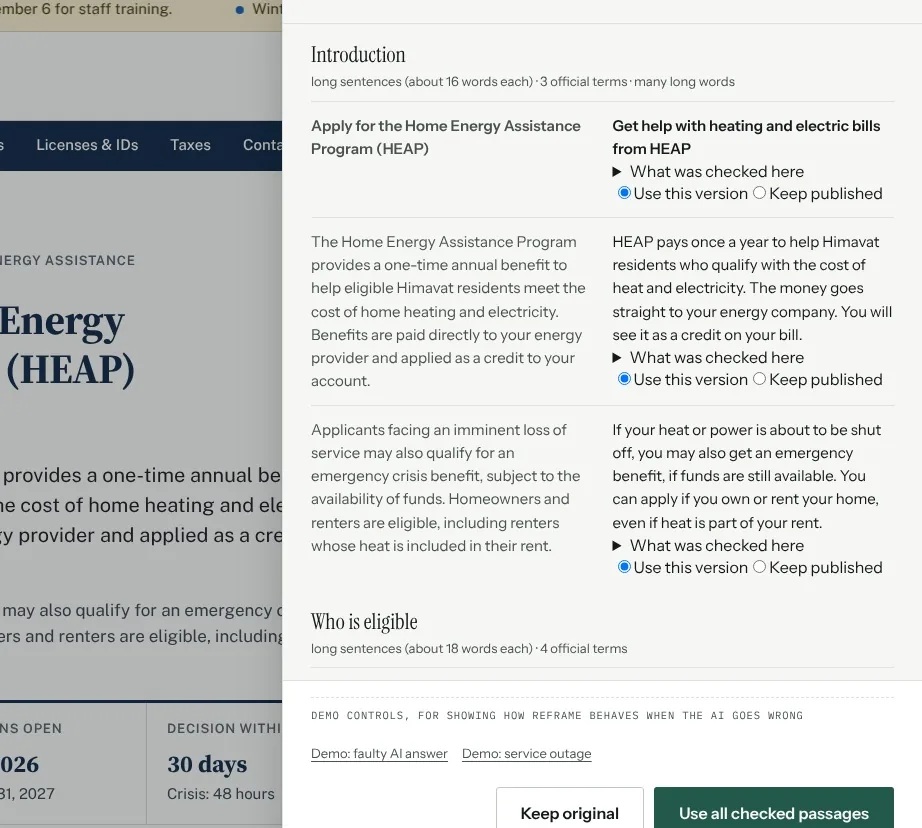
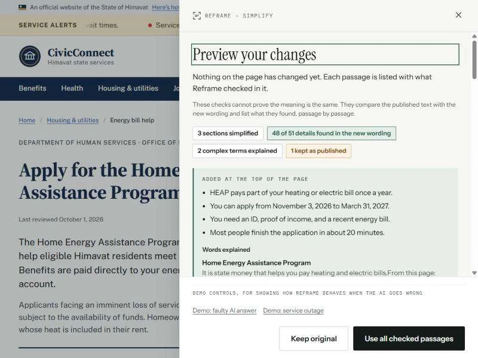
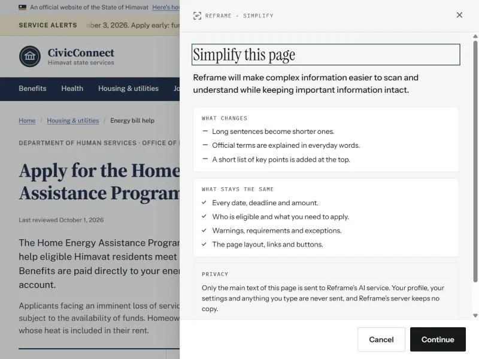
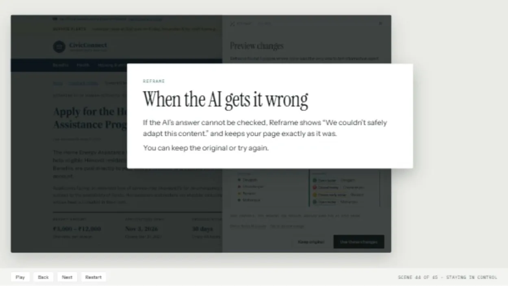
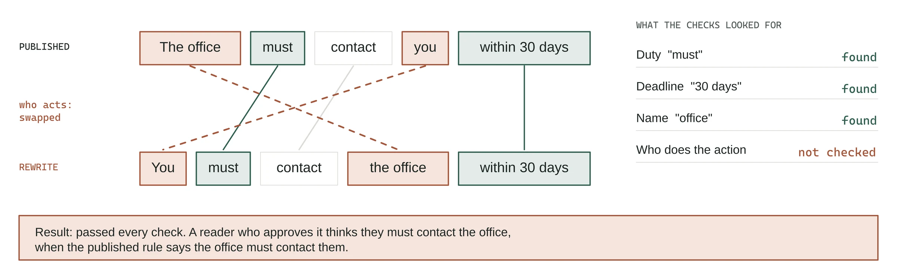
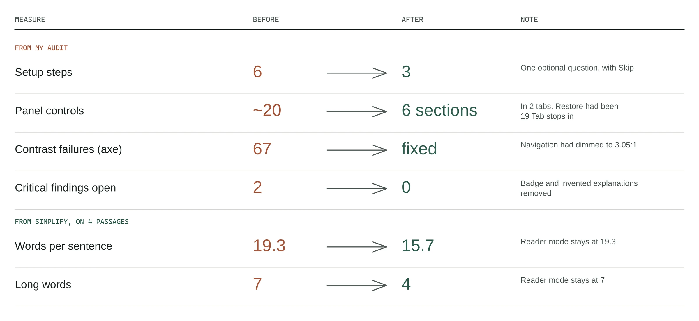

Reframe
Make the page easier to read. Keep the reader in charge.
Reframe is a reading layer that makes dense government pages easier to read, without letting AI change the rules on them.
View tutorial/prototypeReframe opens beside the page it adapts. Text size, spacing, contrast, focus and motion change at once, because they can't alter what a page says. Simplifying, explaining and translating are AI-assisted, and the reader previews, checks and approves each passage before anything changes. Every change can be undone, and Reframe never asks about disability.
CivicConnect, the State of Himavat and the HEAP energy-assistance program on the demo page are fictional.
- Role
- Solo product designerResearch, product definition, interaction and visual design, specs and evaluation.
- Timeframe
- 2 weeks, October 2026
- Tools
- Claude Code for the buildIt wrote the code to my specs: the demo site, the Reframe panel, a Chrome extension (Manifest V3) and 60 automated checks across 9 browser test suites. I reviewed every build and ran every audit.
- Also used
- axe and keyboard-only testing in Chromium for audits, and Excalidraw for diagrams.
- Status
- Working concept prototype. Not yet tested with users.

01 A simplified eligibility passage. The marker explains what changed, and the published wording is one tap away.
Government pages assume the reader reads easily
A benefits page decides who gets help, and the answer sits in income limits, deadlines and exceptions. Rules often hang on one word, and exceptions sit in fine print. A page can pass an accessibility audit and still lose the people it exists to serve.
Who gets left behind
The pages don't meet them halfway
One paragraph, four ways to lose the rule
![A six-line paragraph adapted from the demo page: Applicants facing an imminent loss of service may also qualify for an emergency crisis benefit, subject to the availability of funds. Household income must not exceed the limit for your household size. A reader with low literacy meets rare words and legal phrasing and can't tell whether the emergency benefit is for them. A reader with dyslexia meets two rules in one block and loses their place. A low-vision reader meets fine print in smaller, lighter type and skips it. A reader with a different first language meets modal verbs like may also qualify and must not exceed, where translation can shift the limit, and acts on a different rule.](ux/reframe/p1.webp)
Each reader hits a different barrier on the same paragraph, and each one ends up missing or misreading the rule that decides whether they get help.
Why today's fixes fall short
People applying for help, often under stress, need to find and understand the rule that applies to them. Today's tools either leave the hard wording alone or change it with nothing checking the result.
How might we help every reader understand a government page, without asking them to disclose a disability or risking what the rules say?
Designed around reading situations
Reframe never asks about disability. It asks what would make websites easier to use. Each persona below is a reading situation, defined by what gets in the way on the page. Many of the causes are temporary, like glare or a long day, and they can overlap in one visit.
![Causes feed three reading situations. Low literacy, dyslexia, tiredness or stress, and dense legal wording lead to reading taking effort, which calls for comfortable spacing, plainer wording, a quieter page and the rule up front. Low vision, glare on a phone screen and an old dim monitor lead to seeing taking effort, which calls for bigger text and controls, stronger contrast and cues beyond color. English not being a first language and unfamiliar official terms lead to reading in a second language, which calls for a plain explanation or a translation with the original close by.](ux/reframe/p2.webp)
Because the design targets the barrier, nobody has to name the cause.
The tired applicant
Trying to find out if the household qualifies for HEAP, and by when.
In the way: long sentences, terms like "categorically eligible", a deadline buried in a paragraph and a scrolling alert ticker.
Reframe gives them comfortable spacing, simpler wording approved passage by passage, a focus mode that never dims rules or deadlines, and the ticker as a still list. Covers low literacy and dyslexia.
The reader in glare
Trying to check the income table and find an open service center, on a phone in daylight.
In the way: small type, weak contrast in places, and open or closed shown only as green and red dots.
Reframe gives them text from 90% to 200%, high contrast, 56px targets and text labels where the page relies on color alone. Covers low vision.
The multilingual reader
Trying to understand one eligibility condition in Hindi or Kannada and check it against the official wording.
In the way: legal terms, and machine translation that gives no sign whether numbers, dates and conditions survived.
Reframe gives them explanations beside the source, previewed translations with numbers and dates checked, and View original on screen the whole time.
Four decisions that keep the reader in charge
For each decision I list the options I weighed, why I chose one, and what it cost.
01 Two speeds: instant for looks, reviewed for words
Before any change runs, Reframe asks whether it could alter what the page says.

02 Approve passage by passage
A whole-page rewrite asks the reader to trust everything at once.

03 Evidence instead of confidence scores
The review screen has to give the reader something to act on.

04 The original is always one tap away
A reader can only trust a change they can check against the source.

One launcher, one panel, and the page stays the reader's
These screens come from the working prototype on CivicConnect's HEAP page, in the order of a first visit.


Each section in the panel is tagged Instant or Reviewed, so the reader knows what will happen before acting.


- Text size from 90% to 200%, with four levels each of line, paragraph and letter spacing
- Comfortable reading, with clearer type and shorter lines
- A larger interface with 56px targets
- Reduced motion, which turns the alert ticker into a still list



Designed for the day the AI is wrong
On a benefits page, a fluent mistake is worse than no help. Several layers sit between a rewrite and the page, and each catches a different failure. None of them can promise the meaning survives, and the interface never says it does.
In this prototype, AI answers come from prepared examples, not a live model. The checks, review flow and recovery are fully built.
How the meaning checks work
![The published passage and the proposed rewrite feed a check that pulls out the details that decide a rule: amounts such as 18,000 and 6,000 rupees, dates such as November 3, 2026 and March 31, 2027, duties such as must, may and must not exceed, conditions such as unless and only if, and names such as HEAP and the Office of Energy Assistance. It looks for each one in the rewrite and keeps a tally, 48 of 51 details on the HEAP page. If every detail in a passage is found, the reader sees a preview with the tally. If not, the passage stays as published. The checks run twice, on the service and again in the browser. They can't see who does each action, the order of cause and effect, or claims the page never made.](ux/reframe/t1.webp)
Rules for every AI surface
What leaves the device

Two trust failures my own audit caught
A rewrite the checks missed
This rewrite kept every word the checks look for and reversed the rule.

Method: 19 passage pairs from CivicConnect, 12 that change the meaning and 7 that don't. I labelled them myself and ran them through the prototype's rule-based checks.
What changed, and what I'd measure at scale
Everything below was measured on the working prototype, through my own audits and the Simplify output. Nobody outside the project has used Reframe yet, so there are no adoption or satisfaction numbers.
What changed in the build

Reader mode changes how the page looks and leaves sentence length where it was. Of the three, only Simplify shortens the sentences.
What I'd measure at scale
Shorter text is easy to measure and easy to fake. The measure that matters is whether readers get the rule right, and the guardrails catch Reframe if it ever wins by hiding a mistake.
![The north star is that readers act on the page's real rule without help. It breaks into four measures. Task completion counts readers who finish the eligibility and deadline tasks. Comprehension counts correct answers about the rule, with and without Reframe. Calibrated trust counts readers who keep a wrong rewrite as published, against how sure they say they are. Control is the time it takes to reach View original or Undo without help. The guardrails, with today's prototype values, are meaning changes the checks pass, 3 of 12; faithful rewrites refused, 1 of 7; places the interface says meaning is verified, 0; and open critical audit findings, 0.](ux/reframe/o2.webp)
In use, only opt-in counts would leave the device: how often readers choose Keep published, Undo and View original. No page text, needs or languages.
What I got wrong, and what's next
Most of the design came from catching my own mistakes, in audits of my builds or by questioning my own method. I'm publishing the three rewrites my checks missed, because those limits matter more to a reader than anything that worked.
The three rewrites my checks missed
![Each miss and the check it needs. A swapped actor, where "The office must contact you" became "You must contact the office", passed because the words were all there and only their roles moved; it needs a check of who does each action. A reversed cause, with the same terms kept, passed because terms are checked and their order isn't; it needs a check of because, so, if and unless, in order. An invented claim, where a name was repeated into a claim the page never made, passed because the name matches the source; it needs a flag on sentences with no matching source sentence.](ux/reframe/w1.webp)
What's next
What I'm taking forward
The screen where Reframe declines
It matters more than any other. When a check fails, Reframe keeps the published text and says so.
Counts over percentages
A reader can check "48 of 51 details found". They can only take a percentage on trust.
Claude Code as a build partner
It let me test my decisions in a real browser within two weeks. The specs, the judgment calls and the audits were mine.
Sources: 1 NCES, PIAAC 2023 results (Dec 2024) · 2 International Dyslexia Association, via Reading Rockets, Dyslexia Basics · 3 World Health Organization, Blindness and vision impairment fact sheet (Feb 2026) · 4 US Census Bureau, languages spoken at home, 2019 ACS (Dec 2022) · 5 WebAIM Million 2025 · 6 Code for America, Benefits Enrollment Field Guide, reported by Route Fifty (Apr 2023) · 7 European Disability Forum and IAAP, joint statement on accessibility overlays (2023)